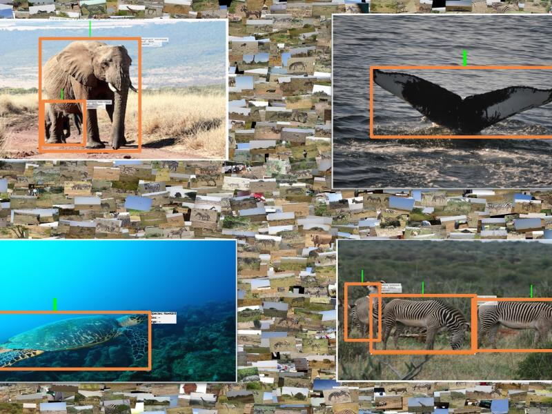
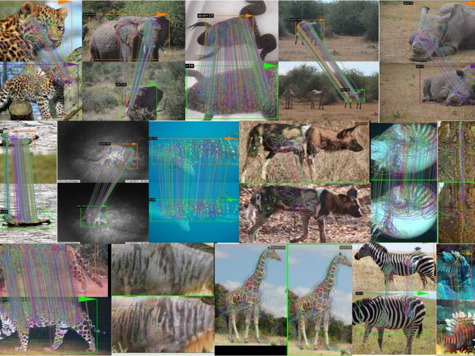

School of Science
Information Technology and Web Science
News
Expert in Ecological Applications of AI Joins Newly Announced Imageomics Institute

Rensselaer Expert in Ecological Applications of Computer Vision Joins NSF-Funded Artificial Intelligence Research Institute

James Hendler Named Chair of ACM Technology Policy Council

Model Sets Minimum Restrictions Needed To Control COVID-19 Given Vaccination Rate
Will Next Generation of Exascale Supercomputers Be Able To Work With Petascale Data?